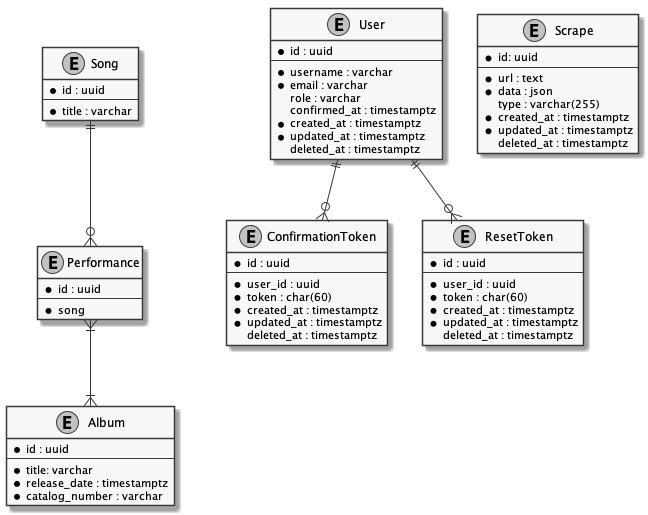

Zappa-Base
Table of Contents
1 Readme
1.1 Getting Started
1.2 Database
1.2.1 Model

1.2.2 TODO Album Model
1.2.3 TODO Performance Model
1.2.4 TODO Song Model
1.2.5 TODO Artist Model
1.3 Scrapers
1.3.1 Overview
Scraping will simply utilize JSDom to render a requested url. The render will be parsed using standard DOM utilies. The output from the scrape should result from a best-pass extraction, optionally followed by a unification step that targets more complex, embeded data, such as:
- Differences in representing 'unknown' data (ex: XX/XX/67 or ??/??/1972)
- Different spellings or names for musicians
- Parentheticals in song titles
1.3.2 DONE Retrieving Raw Html
Node-fetch will be used to receive the website as a raw string and jsdom will then be used to parse that string into a navigatable DOM. funcy will be used to extract text data from the page.
We'll start by requiring those libraries.
const jsdom = require('jsdom'); const fetch = require('node-fetch'); const funcy = require('funcy');
Next we'll use fetch to request the url and return it as a string.
async function getRawHtml(url) { try { const html = await fetch(url).then( res => res.text()); return html; } catch (err) { console.log(err); } }
Here is a portion of the result of calling getRawHtml('https://orgmode.org'):
<?xml version="1.0" encoding="utf-8"?> <!DOCTYPE html PUBLIC "-//W3C//DTD XHTML 1.0 Strict//EN" "http://www.w3.org/TR/xhtml1/DTD/xhtml1-strict.dtd"> <html xmlns="http://www.w3.org/1999/xhtml" lang="en" xml:lang="en"> <head> <!-- 2019-08-01 Thu 09:19 --> <meta http-equiv="Content-Type" content="text/html;charset=utf-8" /> <meta name="viewport" content="width=device-width, initial-scale=1" /> <title>Org mode for Emacs – Your Life in Plain Text</title> <meta name="generator" content="Org mode" /> <meta name="description" content="Org: an Emacs Mode for Notes, Planning, and Authoring" /> <meta name="keywords" content="Org Emacs outline planning note authoring project plain-text LaTeX HTML" /> <link rel="stylesheet" href="org.css" type="text/css" /> <meta name="flattr:id" content="8d9x0o"> <script type="text/javascript"> /* @licstart The following is the entire license notice for the JavaScript code in this tag. Copyright (C) 2012-2019 Free Software Foundation, Inc. The JavaScri...
1.3.3 TODO [0/1] Scraping Album Information
We'll use the following page to get an updated list of the official discography: http://www.globalia.net/donlope/fz/notes/discography
Despite having some unneccesary listings and a few missing fields, I felt this page, with its table layout, would be the most straightforward to scrape. It has also been kept up to date. Zappa.com itself has the official discography, however all records are listed as being published by Zappa Records (as those most recent reissues have been) whereas I feel the original label and catalog number are of more pressing archival importance.
This will get us all of the titles as well as links to detail pages which we can use to scrape furthur information.
- TODO
[0/1]Action Items
- Code
async function getAlbumList() { let html const albums = []; try { html = await getRawHtml('http://www.globalia.net/donlope/fz/notes/discography'); } catch (err) { console.log(err) return; } const JSDOM = jsdom.JSDOM; const dom = new JSDOM(html); const window = dom.window; const document = window.document; const albumLinks = document.body.querySelectorAll('.album'); albumLinks.forEach(link => { const album = {}; albumRow = link.parentElement.parentElement; album.title = link.textContent; album.artist = albumRow.querySelector(':nth-child(2)').textContent; album.label = albumRow.querySelector(':nth-child(4)').textContent; album.format = albumRow.querySelector(':nth-child(3)').textContent; album.catalogNumber = albumRow.querySelector(':nth-child(5)').textContent; album.releaseDate = albumRow.querySelector(':nth-child(4)').textContent; albums.push(album); }) return albums; }
This table should represent a portion of the extracted data.
title artist label format catalogNumber releaseDate Freak Out! The Mothers Of Invention Verve/MGM 2LP V6-5005-2 Verve/MGM Absolutely Free The Mothers Of Invention Verve/MGM LP V6-5013 Verve/MGM Lumpy Gravy Francis Vincent Zappa/The Abnuceals Emuukha Electric Symphony Orchestra Capitol/EMI LP TAO 2719 Capitol/EMI We're Only In It For The Money The Mothers Of Invention Verve/MGM LP V6-5045 Verve/MGM Lumpy Gravy Francis Vincent Zappa/Abnuceals Emuukha Electric Symphony Orchestra & Chorus Verve/MGM LP V6-8741 Verve/MGM Cruising With Ruben & The Jets The Mothers Of Invention Bizarre/Verve/MGM LP V6-5055X Bizarre/Verve/MGM Mothermania The Mothers Bizarre/Verve/MGM LP V6-5068X Bizarre/Verve/MGM Uncle Meat The Mothers Of Invention Bizarre/Reprise 2LP 2MS 2024 Bizarre/Reprise The ** Of The Mothers The Mothers Of Invention Verve/MGM LP V6-5074 Verve/MGM Hot Rats Frank Zappa Bizarre/Reprise LP RS 6356 Bizarre/Reprise Burnt Weeny Sandwich The Mothers Of Invention Bizarre/Reprise LP RS 6370 Bizarre/Reprise The Mothers Of Invention—Golden Archive Series The Mothers Of Invention MGM LP GAS 112 MGM Weasels Ripped My Flesh The Mothers Of Invention Bizarre/Reprise LP MS 2028 Bizarre/Reprise Chunga's Revenge Frank Zappa Bizarre/Reprise LP MS 2030 Bizarre/Reprise The Worst Of The Mothers The Mothers Of Invention MGM LP SE 4754 MGM Fillmore East—June 1971 The Mothers Bizarre/Reprise LP MS 2042 Bizarre/Reprise Frank Zappa's 200 Motels Frank Zappa Bizarre/United Artists 2LP UAS 9956 Bizarre/United Artists Just Another Band From L.A. Las Mothers Bizarre/Reprise LP MS 2075 Bizarre/Reprise Waka/Jawaka Frank Zappa/Hot Rats Bizarre/Reprise LP MS 2094 Bizarre/Reprise The Grand Wazoo The Mothers Bizarre/Reprise LP MS 2093 Bizarre/Reprise
1.3.4 TODO Scraping Songs
async function getSongList() { let html const songs = []; try { html = await getRawHtml('http://www.globalia.net/donlope/fz/songs'); } catch (err) { console.log(err) return; } const JSDOM = jsdom.JSDOM; const dom = new JSDOM(html); const window = dom.window; const document = window.document; const songLinks = document.querySelectorAll('div > ul > li > a'); songLinks.forEach(function(songLink){ const song = {}; song.title = songLink.textContent; songs.push(song); }) return songs; }
This table should represent a portion of the extracted data.
| title |
| "1/4 Tone Unit" |
| "13" |
| "16 Candles" |
| "1812 Overture" |
| "#2" |
| "20 Small Cigars" |
| "200 Motels (Contempo 70)" |
| "200 Motels Finale" |
| "200 Years Old" |
| "21" |
| "3rd Movement Of Sinister Footwear, Theme from the" |
| "3rd Stone From The Sun" |
| "4'33\"" |
| "400 Days of The Year" |
| "409" |
| "50/50" |
| "51 Minitudes For Piano" |
| "#6" |
| "#7" |
| "#8" |